Video Editing
play_arrow
Waspada Online
Editing news videos for Waspada Online's social media platforms.
CapCut
Explore my work in video editing, graphic design, and multimedia production.
Editing news videos for Waspada Online's social media platforms.
Editing news videos for Waspada Online's social media platforms.
Editing a vlog video documenting a visit to the Indonesian Plantation Museum...
Video celebrating Waspada Online's 28th Anniversary.
Worked as a promotional and social media video talent.
Worked as a promotional and social media video talent.
Worked as a promotional and social media video talent.
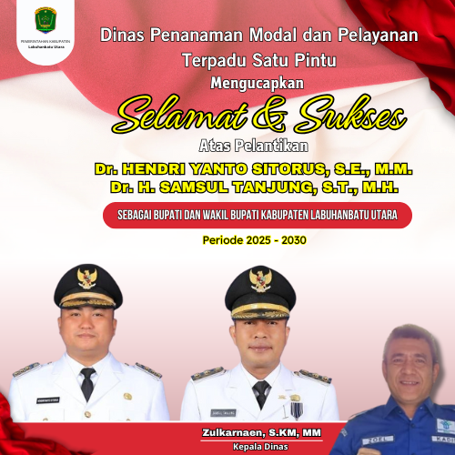
Inauguration Greeting Design for North Labuhanbatu Leaders
Inauguration Greeting Design for North Labuhanbatu Leaders
Inauguration Greeting Design for Samosir Leaders
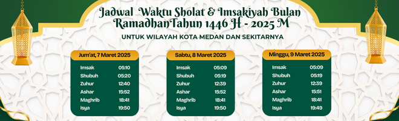
Design of the Medan Imsakiyah Schedule
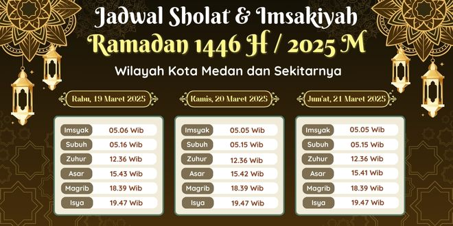
Design of the Medan Imsakiyah Schedule
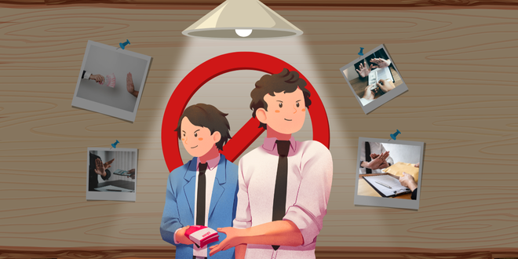
News Supporting Illustration
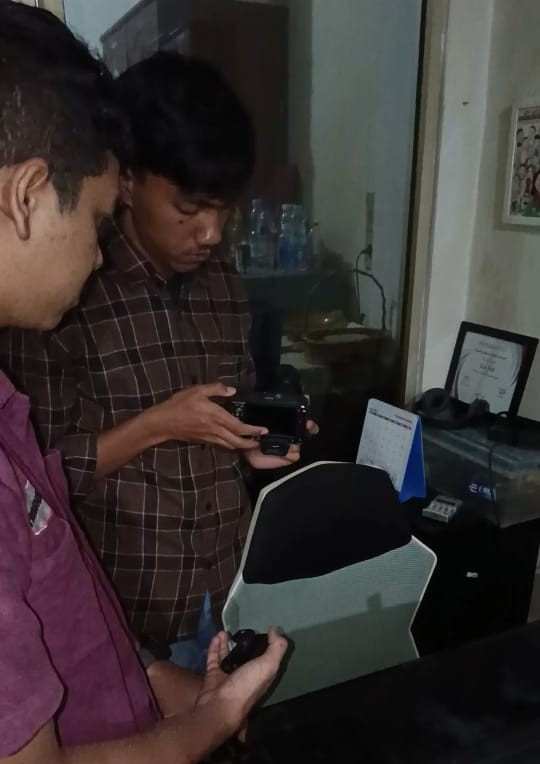
Camera Setup for Video Shooting
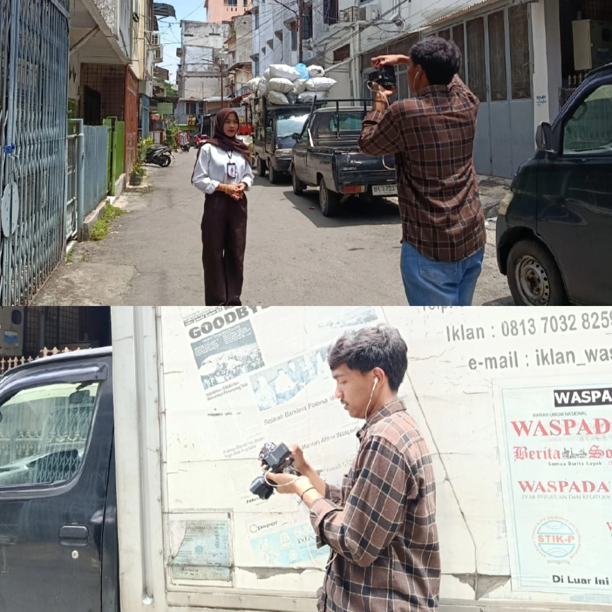
News Video Recording for Social Media
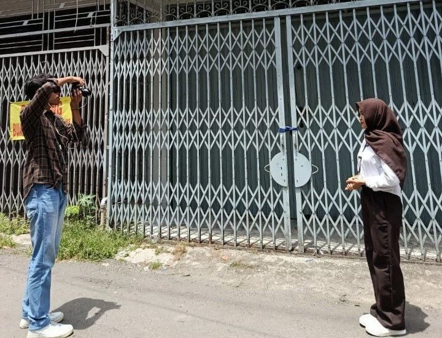
News Video Recording for Social Media
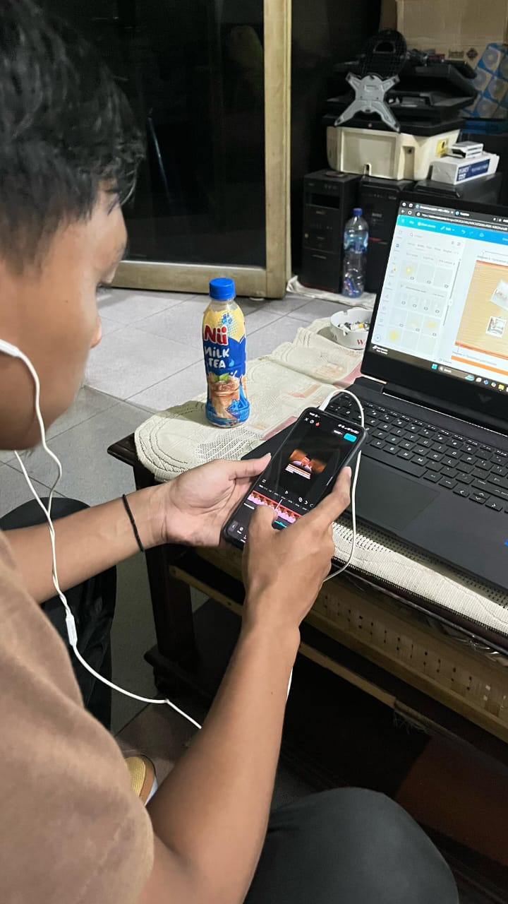
News Video Editing for Social Media
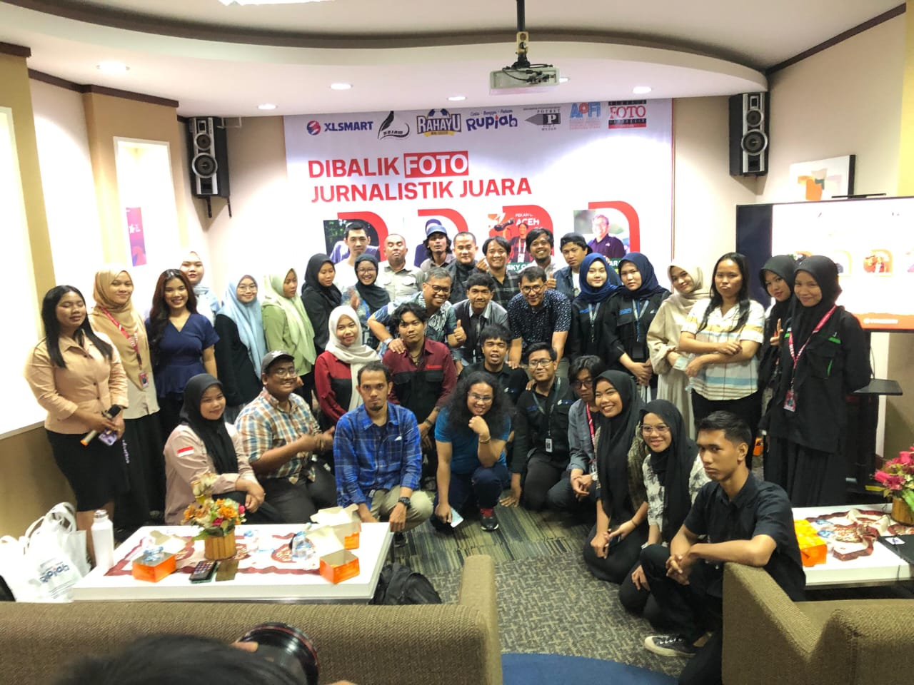
Attending the “Dibalik Foto Jurnalis Juara” Seminar
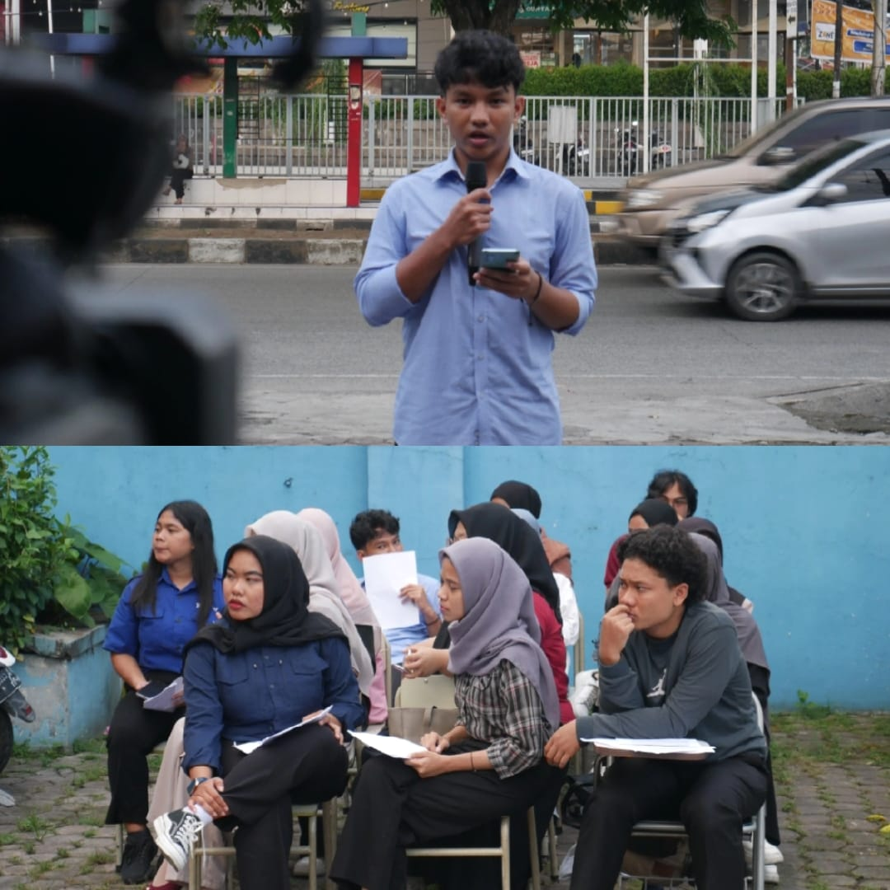
Documented the STIK-P Medan Final Examination
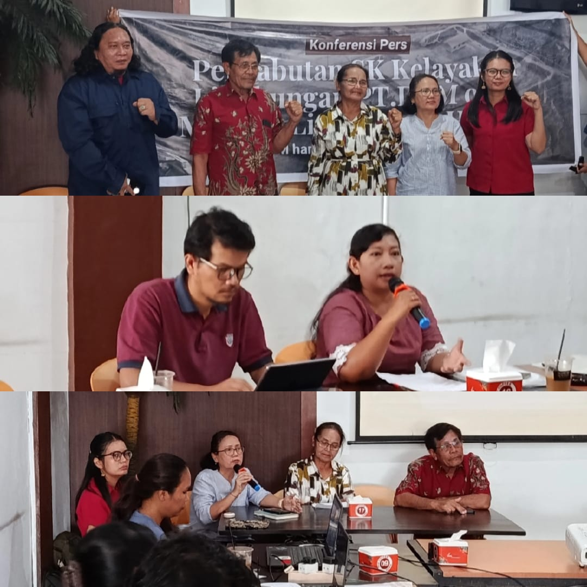
Press Conference Documentation for Company Archives